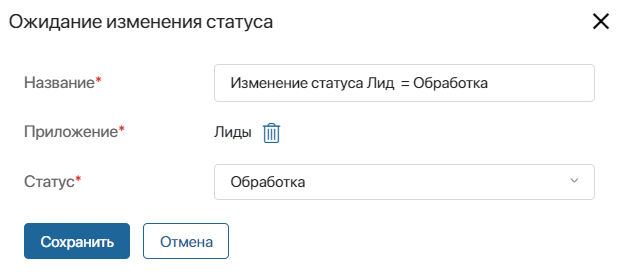

Триггер используется в сценарии карты коммуникаций, чтобы инициировать переход к следующему его шагу. Триггер размещается после блока Сегмент и отслеживает изменения в элементах приложения, где указаны контакты. Например, можно отслеживать изменения в лидах и сделках.
Следующий шаг сценария выполнится для контакта, если этот контакт:
- является подписчиком сегмента, выбранного на шаге 1 сценария;
- указан в элементе приложения, которое задано в триггере, и для этого элемента выполнены условия, указанные в триггере. Проверка условия выполняется, пока карта активна и не завершена.
Вы можете добавить в сценарий несколько триггеров. В их настройках должно быть указано одно и то же приложение. Исключением является триггер Отсутствие активности контакта. При этом сценарий будет выполняться по подписчикам, которые определятся в первом триггере. Только по ним выполнится проверка условий в последующем триггере и т. д.
В настройках триггера:
- укажите название блока в сценарии;
- выберите приложение, если есть соответствующее поле в настройках, в котором будут отслеживаться изменения для запуска следующего шага сценария. Для выбора доступны приложения, связанные с приложением Контакты и указанные в настройках раздела Маркетинг.
Другие настройки зависят от выбранного триггера.
Вы можете добавить в сценарий следующие триггеры:
- Ожидание изменения статуса;
- Ожидание значения поля;
- Отсутствие активности контакта;
- Отсутствие изменения статуса;
- Создание элемента приложения.
Ожидание изменения статуса
Триггер отслеживает изменение статуса элемента приложения. Сценарий продолжится, если:
- элемент уже имеет статус, указанный в настройках;
- статус элемента изменится на заданный, пока карта активна.

Например, следующий шаг сценария выполнится для подписчика, который указан в элементе приложения Лиды, если:
- элемент имеет статус Обработка на момент активации карты;
- статус элемента изменится на Обработка в период, пока карта активна.
Примеры с этим триггером смотрите в описании кейсов Приглашение на вебинар и Отзыв после покупки.
Ожидание значения поля
Триггер отслеживает изменение свойства элемента приложения. Сценарий продолжится, если:
- свойство уже имеет значение, указанное в настройках, в момент активации карты;
- значение свойства изменится на заданное, пока карта активна.
Например, следующий шаг сценария выполнится для подписчика, который указан в элементе приложения Компании, если:
- свойство Тип клиента имеет значение Золото на момент активации карты;
- значение свойства Тип клиента изменится на Золото в период, пока карта активна.
В опции Фильтр* можно указать несколько полей приложения. Тогда сценарий перейдёт на следующий шаг только при выполнении всех условий.
Пример с этим триггером смотрите в описании кейса Акция Золотые клиенты.
Отсутствие активности контакта
Триггер отслеживает наличие записей по подписчику в истории активностей за указанный период. Учитываются все активности, в том числе скрытые. Если записей не было, сценарий продолжится.
Обратите внимание, если этот триггер в сценарии размещён первым, то в настройках последующих триггеров можно выбирать любое приложение.
Рассмотрим пример. В триггере задан период 30 дней. На момент активации карты:
- для подписчика А нет активностей за последние 30 дней — триггер сработает сразу;
- для подписчика В есть запись о звонке 25 дней назад — триггер сработает через пять дней и сценарий продолжится, если карта будет активна и новых активностей по подписчику не появится.
Отсутствие изменения статуса
Триггер отслеживает период, в течение которого элемент приложения находится в одном и том же статусе. Если статус не менялся за указанное время, сценарий продолжится.
Рассмотрим пример. В триггере задан период 90 дней. На момент активации карты:
- для подписчика А статус Обработка в сделке не изменялся последние 90 дней — триггер сработает сразу;
- для подписчика В статус в сделке сменился на Обработка 70 дней назад — триггер сработает через 20 дней и сценарий продолжится, если карта будет активна и статус сделки за это время останется прежним;
- для подписчика С статус в сделке сменился на Обработка 10 назад. Через 20 дней после активации карты статус сменился на Квалифицирован — триггер не сработает по этому подписчику.
Создание элемента приложения
Триггер отслеживает, добавился ли в приложение новый элемент с подписчиком сегмента, для которого настроен сценарий. Если элемент создан в период активности карты, сценарий продолжится.

В опции Фильтр* можно указать несколько полей приложения. Тогда сценарий перейдёт на следующий шаг только при выполнении всех условий.
Например, следующий шаг сценария выполнится для подписчика, который указан в элементе приложения Сделки с заданным условием, который создан в период с момента активации карты до её завершения.
Обратите внимание, если элементы приложения импортированы с включённой опцией Игнорировать обработчики событий, триггер не сработает для них и сценарий не выполнится.
Пример с этим триггером смотрите в описании кейса Рассылка по продуктам.